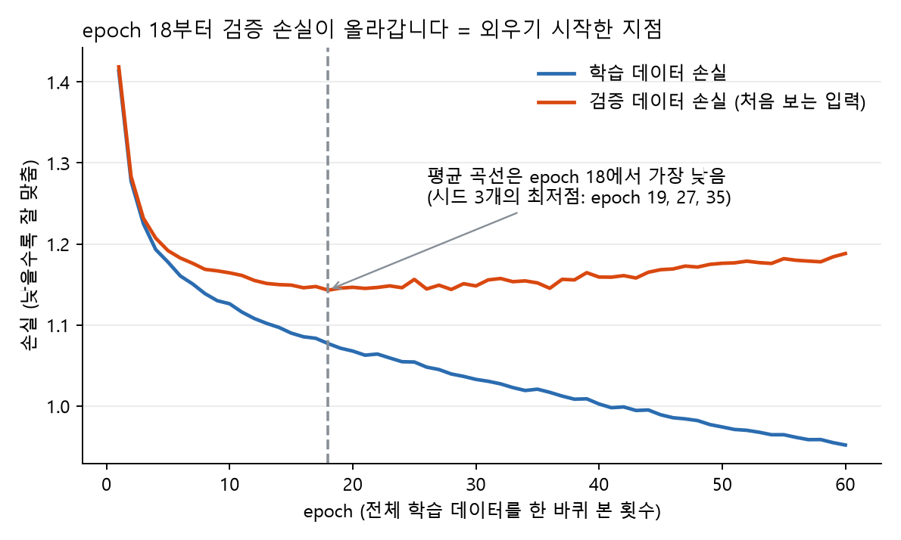
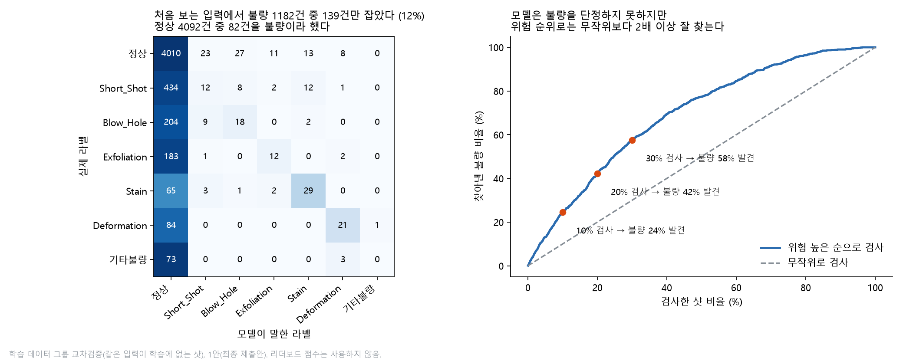
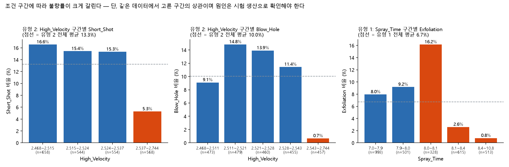

주조 불량 유형 예측
1조 최종 보고서
포스코 K-뉴딜아카데미 딥러닝 최종 프로젝트 · 7,535샷(학습 5,274 · 시험 2,261) · 지표 macro F1 · 검증 수치는 학습 데이터로 계산했고, 최종 제출 모델은 중간 리더보드(public) 점수를 기준으로 1안으로 정했다
실제 점수 (공개 기준선 0.2517)0.5987
잡는 불량 비율10%
점수의 표본 흔들림SD 0.037
10:1에서 전수 검사 대비 −9%×0.1
요약
최종 모델
랜덤포레스트 + ExtraTrees 확률 평균 + 두 단계 모델(불량 여부 → 불량 종류) 혼합 + 앞뒤 사건의 입력값 40개 추가(입력 25→65개).
핵심 발견
같은 입력이 없는 새 샷에서는 불량 1,182건 중 122건(10%)만 잡고 정상 4,092건 중 73건(1.8%)에 헛경보를 낸다.
현장 제안
불량 판정이 아니라 검사 대상 선별로 쓴다. 경보 기준을 놓침 비용에 맞춰 낮추는 방식이다.
한계
같은 입력이 없는 새 샷에서는 불량의 10%만 잡는다.
비용 비율은 가정이라 현장 값으로 교체해야 한다.
요약
- 안 이름: 1안 = 최종 제출안(점수가 높고 채점 구조에 맞음), 2안 = 현장성을 높인 또 다른 안(불량을 더 적극적으로 잡고, 뒤 사건 입력 없이 실시간 판정이 가능).
- 읽는 순서: 제출 모델 1안(4절) → 새 입력에서의 한계(6절, 그림 4) → 대응: 경보 기준과 또 다른 안(2안, 7절) → 원인 후보(8절)와 현장 언어(9절).
- 최종 모델: 랜덤포레스트 + ExtraTrees 확률 평균 + 두 단계 모델(불량 여부 → 불량 종류) 혼합 + 앞뒤 사건의 입력값 40개 추가(입력 25→65개).
python main.py한 줄, CPU 약 80초. 중간 리더보드 점수 0.5987(공개 기준선 0.2517). - 핵심 발견: 시험 샷의 약 58%는 같은 입력(쌍둥이)이 학습에 있어 93%를 맞힌다.같은 입력이 없는 새 샷에서는 불량 1,182건 중 122건(10%)만 잡고 정상 4,092건 중 73건(1.8%)에 헛경보를 낸다. 이 한계는 모델 종류와 무관하다(18개 탐지기 AUC 0.72~0.75).
- 현장 제안: 불량 판정이 아니라 검사 대상 선별로 쓴다. 경보 기준을 놓침 비용에 맞춰 낮추는 방식이다.하루 3,800샷 기준 운영안은 정상 확률 ×0.1이고, 놓침 1건=헛경보 10건이면 전수 검사보다 9% 싸다(5:1은 24%, 20:1은 이점 없음, 7절). 2안과 비교해도 경보 기준을 맞추면 최저 비용 차이는 4% 안이다(4·7절). 공정 관리 후보 구간은 시험 생산으로 확인해야 한다.
- 한계: ① 같은 입력이 없는 새 샷에서는 불량의 10%만 잡는다.② 뒤 사건 입력은 실시간 현장에서 모르므로 사후 분석·일괄 선별용이다(앞 사건만 쓰면 이득이 사라짐, 4절 ①). 실시간 적용에는 앞 사건만 쓰는 변형이 필요하다.③ 비용 비율은 가정이라 현장 값으로 교체해야 한다.
- 규칙 준수: 특징은 전처리된 입력뿐이며 shot_id·id·Shot 열과 정답에서 만든 값, 원본 불량 기록은 쓰지 않았다.쌍둥이 묶음은 입력값 비교로 만들어 검증 분할에만 쓴다.이웃 입력은 쓰지만 이웃의 정답은 쓰지 않았다.최종 제출 모델은 중간 리더보드 점수(0.5987)를 기준으로 1안으로 정했고, 학습 데이터 검증은 한계와 운영 기준을 보는 데 썼다.
데이터 문제와 처리
| 문제 | 확인한 수치 | 처리와 이유 |
|---|---|---|
| 식별·상수 열 | shot_id·id·Shot 3개, Min/Max 상수 8개 | 제거(식별 열은 규칙상 특징 불가, 상수는 정보 없음). 32열 → 21열 + 표시 열 4개 = 25개 |
| 결측 | 공장 온도·습도 90행(전부 제품 유형 2, 두 덩어리) | 앞뒤 실측 30개씩의 중앙값으로 채움 + 결측 표시 열. 방식·창 크기 간 점수 차 0.004(표준편차 0.03 이내) |
| 이상한 값 | 속도 0·긴 사이클(설비 정지로 보임), 이상치 15행 | 지우지 않고 표시 열만 추가. 지워도 점수 차가 표준편차 안쪽 |
| 중복 행(쌍둥이) | 입력 21개가 앞 행과 같은 행 3,174개(42%), 같은 묶음 안 라벨 일치 97.8% | 행은 유지하고 묶음 번호를 검증 분할에만 사용(특징 아님). 시험 데이터도 58%가 같은 구조 |
| 클래스 불균형 | 정상 77.6%, 기타불량 76건·Stain 100건 | class_weight(balanced의 0.5제곱). 정확도가 아닌 macro F1 사용 |
| 제품·시기 교란 | shot 4208에서 제품 전환, 불량 종류가 제품·시기에 몰림(400샷 블록 불량률 1.8~51%) | 검증을 묶음·시간순으로 따로 측정(6절), 원인 분석은 제품 유형별로 수행(8절) |
설계 카드 (MLP)
입력 25개 → 은닉 128 → 64 → 출력 7, 활성화 ReLU(비선형 표현), 드롭아웃 0.2(과적합 방지), 손실은 클래스 가중 교차엔트로피(희귀 불량을 놓치지 않게), Adam 학습률 1e-3(손실이 안정적으로 내려감), 가중치 감쇠 1e-4. epoch는 검증 손실이 최저인 18에서 멈춘다(그림 1). 입력은 학습 구간 평균·표준편차로 표준화.

베이스라인 대조
| 모델 (쌍둥이 묶음 검증, 새 입력) | macro F1 | 비고 |
|---|---|---|
| 공개 기준선(로지스틱 + class_weight, 강사 제공) | 0.2517 | 리더보드 구조 |
| 로지스틱 / RF / HGB (잎 10) | 0.287 / 0.326 / 0.305 | 새 입력만 맞히는 어려운 검증 |
| MLP | 0.277(탐지율 54%) | 리더보드 구조에서는 0.289로 트리(0.58)보다 훨씬 낮음 |
MLP가 리더보드 구조에서 낮은 이유: 시험의 58%는 학습에 같은 입력이 있는데 트리는 이를 외워 93% 맞히고 MLP는 외우지 못한다.반대로 새 입력에서는 MLP(0.277)와 트리(0.279)가 같다.즉 점수 차는 모델 품질이 아니라 "같은 입력을 외울 수 있는가"에서 나온다.
비교 실험 3종 (한 번에 하나만 바꿈, 1안 대비 내부 점수 차이)
한 번에 하나만 바꾼 결과 (1안 대비 점수 차이)
1안 vs 2안 그래프
1안 vs 2안: 평가 조건에 따라 우열이 뒤집힌다
불량 탐지율
자세한 설명과 표 전체
| 바꾼 것 | 결과 | 해석 |
|---|---|---|
| ① 앞뒤 사건 입력값 특징 (없음 → 40개) | +0.0045 (앞만 −0.0002, 뒤만 −0.0015) | 유일하게 일관된 이득. 앞뒤 샷의 공정 상태가 현재 샷의 불량과 이어진다고 해석. 라벨은 쓰지 않음 |
| ② 클래스 가중치 강도 (0.3 / 0.75 / 1.0, 기본 0.5) | −0.0002 / +0.0006 / −0.0007 | 노이즈 → 0.5 유지. 강하게 줄수록 탐지는 늘지만 헛경보도 늘어 점수는 그대로 |
| ③ 잎 크기 (최소 샘플 1 → 2) | 0.608 vs 0.610 | 동일 → 1 유지(탐지 57.4%, 정확도 87.2%) |
이 밖에 나무 수 900, max_features, 부트스트랩, 이웃 ±2~3, 시기 군집, 클래스별 탐지기, SMOTE식 보강, 이동평균 등 20여 가지를 시험했으나 모두 ±0.005 이내였고(시드 흔들림 0.005), 어떤 조합도 시험 데이터 예측이 시드에 따라 평균 3행(0.1%) 넘게 바뀌지 않았다.1안이 평평한 정점이다.
최종 모델 선택 근거: 1안(최종 제출안)과 2안(현장성을 높인 또 다른 안: RF 잎1 + RF 잎6 확률 평균, 기타불량 확률 ×1.5, 입력 25개)을 같은 학습 데이터 검증에서 비교했다.최종 제출은 실제 리더보드(public) 점수 기준으로 1안(0.5987 대 0.5710)으로 정했다. 검증 수치는 이 선택의 한계를 확인하는 데 썼다."새 입력"은 쌍둥이를 같은 쪽에 두는 5분할, "새 생산 구간"은 연속 100샷을 통째로 떼는 5분할이며 시드 7·123·2026 평균, 경보 기준은 둘 다 ×1.0이다.
| 모델 | public 점수 (실제 제출) | 새 입력 F1 / 탐지율 | 새 생산 구간 F1 / 탐지율 | 놓침 / 헛경보 (public 크기 1,130샷 환산) | 구조와 용도 |
|---|---|---|---|---|---|
| 1안 (최종 제출안) | 0.5987 | 0.258 / 10.3% | 0.136 / 1.2% | 106 / 23 | 숲 6개·2단계·앞뒤 입력 65개. 채점 구조(쌍둥이 58%)에 맞음, 뒤 사건 입력이 필요해 사후 분석용 |
| 2안 (현장성을 높인 또 다른 안) | 0.5710 | 0.323 / 48.0% | 0.235 / 31.0% | 65 / 106 | 숲 2개·입력 25개. 불량을 적극 부름, 실시간 가능 |
리더보드와 같은 구조(시험의 58%가 학습에 같은 입력)에서는 외우는 능력이 점수를 가르므로 1안이 높고, 처음 보는 입력과 새 생산 구간에서는 2안이 불량을 더 잡는다.1안은 새 생산 구간에서 불량을 거의 못 잡는다(탐지율 1.2%). 불량을 구분하는 능력 자체(AUC)는 두 모델 모두 0.74~0.75로 같고, 1안과 2안의 public 차이 0.028은 private 크기(1,131샷) 표본 흔들림(SD 0.037) 안이다.1안에 2안의 확률을 섞어도 점수·정확도·새 입력 세 지표를 동시에 올리지는 못했고, 탐지 증가 효과는 1안의 경보 기준 하나로 더 적은 손실로 얻는다(7절). 그래서 제출 CSV는 1안, 현장 운영 후보는 2안으로 구분한다.
학습곡선 (데이터를 더 모아야 하는가)

결론: 데이터를 더 모으면 "이미 본 조건"의 점수는 오르지만 새 조건의 점수는 거의 안 오른다.새 조건을 잡으려면 데이터 양보다 불량과 정상을 가르는 새 측정이 필요하다.가정 기반 계산(불량 샷에서 평균 d 표준편차 높은 가상 측정을 추가, 실제 결과 아님): d=0.5는 점수 0.268→0.269로 변화 없고, d=1이면 0.297, d=2이면 0.400(탐지율 14%→41%). 구분력이 표준편차의 약 1배 이상인 측정을 찾아야 의미가 있다.
분할 방식 비교 (어느 쪽이 배포 성능인가)
검증 방식별 macro F1 (1안 vs 2안)
표와 핵심 정리
| 모델 | 무작위 80/20리더보드와 가장 비슷 | 쌍둥이 묶음 80/20새 입력 | 시간순 80/20현장 배포에 가까움 |
|---|---|---|---|
| 1안(최종 제출안) | 0.560 | 0.256 | 0.125 (탐지 0%) |
| 2안 (현장성을 높인 또 다른 안) | 0.504 | 0.338 | 0.111 (탐지 31%, 정확도 50%) |
- 1안은 외운 만큼 부푼다: 외우는 1안은 무작위에서 부풀고 시간순에서는 "전부 정상"(0.125)에 가깝다.
- 2안도 시간순에서는 1안과 같은 수준: 시간순에서도 불량의 31%를 부르지만 헛경보가 많아 정확도가 50%이고 F1은 0.111이다.
- 분할에 따라 모델 순위가 바뀐다: 무작위 분할과 실제 리더보드(public 1안 0.5987, 2안 0.5710)에서는 1안이 높고, 쌍둥이 묶음(새 입력) 기준에서는 2안이 0.34로 1안(0.26)보다 높다.
- 그러므로 최종 점수(private 1,131행, 흔들림 SD 약 0.03)를 현장 성능으로 읽으면 안 된다.연속 100샷 구간을 통째로 떼는 "새 생산 구간" 검증(4절 표)에서도 같은 결과다: 1안은 F1 0.136·탐지율 1.2%, 2안은 0.235(탐지 31%).
새 입력에서 실제로 잡고 놓친 건수 (그림 4)

시간순 구간의 성격과 1안을 고른 이유
- 시간순 구간(shot 6009~7535)은 전부 제품 유형 2이고 학습에 이 제품이 1,269행뿐이어서 "새 시기의 같은 제품"을 거의 못 본 시험이다.
- 시험 샷의 58%가 학습에 같은 입력이 있는 구조(private 58.4%, 입력으로 센 값)라 최종 채점도 이 구조에 가깝다고 보고, public 점수가 높은 1안을 택했다.
- 대신 새 입력 약점을 한계로 명시하고 운영안은 경보 기준으로 보완했다.
- private 점수는 1,131샷이라 표본만으로 SD 약 0.037 흔들리므로 점수 예측은 하지 않는다.
운영 기준 (비용표)
직접 바꿔 보기: 비용 비율을 넣으면 운영 기준이 바뀝니다
- 넣는 것모델 · 검증 조건 · 놓침 비용 비율 · 하루 샷 수
- 읽는 것결과 칸(최저 비용 기준과 전수 검사 대비) → 곡선과 「계산기 결과표」는 그 근거, 결과표의 「운영안」 행이 고른 기준(×0.1)
계산기 결과표
| 결정 기준정상 확률 배율 | 하루 검사 대상샷 | 놓침건 | 헛경보건 | 총비용헛경보 1건 = 1 |
|---|
고른 운영안과 근거
- 고른 운영안: 정상 ×0.1(하루 2,575샷 검사, 놓침 87건, 헛경보 1,810건).기준안 10:1에서 최저는 ×0.05(2,523)이지만 검사 대상이 3,032샷(80%)이라 ×0.1(2,677, 검사 2,575샷 68%)을 골랐다. 비용은 최저와 6% 차이이고 전수 검사(2,948)보다 9% 싸다.
- 제출 CSV(가장 높은 확률의 라벨, 정상 ×1.0)와 운영안(정상 ×0.1)은 다르다: CSV는 macro F1을 높이려는 7종 분류이고(×0.1로 낮추면 채점 구조를 반영한 내부 검증 점수가 0.62에서 0.49로 내려간다), 운영안은 놓침 비용을 반영해 불량을 더 자주 부르는 기준이다.
- 현장이 실제 비용 비율을 알려 주면 계산기와 「가정과 출처·정적 비용표」에 바로 대입해 운영 기준을 확정한다.
가정과 출처 · 정적 비용표(시드 4개 평균)
- 하루 생산량은 계산했다: 데이터의 사이클 시간 중앙값 22.6초, 24시간 연속 가동이면 86,400÷22.6 ≈ 하루 3,800샷(가동 시간은 가정, 8시간 교대면 약 1,270샷). 불량률 22.4%는 학습 데이터에서 계산한 처음 보는 입력 기준이라 하루 불량 약 850건·정상 약 2,950건이다.
- 비용 비율은 현장 자료가 없어 가정한다: 헛경보(정상 샷을 불량으로 불러 한 번 더 검사) 1건 = 1, 놓친 불량 1건 = 5·10·20. 비용 비율은 부품의 안전 등급·보증/리콜 비용·재검사 비용에 따라 현장마다 다르므로 정확한 값을 알 수 없다.
- 그래서 기준안은 10:1로 두고(품질비용 이론의 "1-10-100 경험 법칙", 검사·재작업 대비 고객에게 나간 불량의 비용이 약 10배, 엄밀한 표준 수치는 아님) 5:1과 20:1에서도 같은 표를 만들어 결론이 유지되는지 본다.
- 결정 기준은 정상 확률에 곱하는 배율(작을수록 불량으로 더 자주 부른다,
main.py의ALERT_NORMAL_SCALE)이다. 건수는 학습 데이터 검증(처음 보는 입력, 시드 4개 평균이라 그림 4의 시드 3개 평균과 몇 건 다름)이며 리더보드 점수는 쓰지 않았다.
| 결정 기준정상 확률 배율 | 하루 검사 대상샷 | 놓침건 | 헛경보건 | 총비용 5:1 | 총비용 10:1 (기준) | 총비용 20:1 |
|---|---|---|---|---|---|---|
| 검사 안 함 | 0 | 852 | 0 | 4,258 | 8,516 | 17,033 |
| 정상 ×1.0 (제출 CSV 기준) | 154 | 759 | 61 | 3,856 | 7,650 | 15,239 |
| 정상 ×0.5 | 591 | 565 | 305 | 3,132 | 5,959 | 11,613 |
| 정상 ×0.3 | 1,179 | 371 | 699 | 2,556 | 4,413 | 8,127 |
| 정상 ×0.2 | 1,720 | 248 | 1,117 | 2,359 | 3,601 | 6,085 |
| 정상 ×0.1운영안 | 2,575 | 87 | 1,810 | 2,244 | 2,677 | 3,543 |
| 정상 ×0.05 | 3,032 | 31 | 2,212 | 2,368 | 2,523 | 2,835 |
| 전수 검사 | 3,800 | 0 | 2,948 | 2,948 | 2,948 | 2,948 |
- 결론은 비용 비율에 민감하다: 5:1이면 ×0.1이 전수 검사보다 24% 싸서 모델이 분명히 도움이 되고(2,244), 10:1이면 이점이 9~14%로 줄어 샷의 70~80%를 검사해야 하고, 20:1이면 ×0.1(3,543)은 전수 검사(2,948)보다 비싸고 ×0.05(2,835)도 4% 차이라 전수 검사와 구별되지 않는다.
- 처음 보는 입력에서 불량을 구분하는 정보 자체가 약하기 때문이다(AUC 0.75). 그러므로 이 모델은 놓침이 아주 비싼 현장보다 비용 비율이 낮은 현장, 또 같은 조건이 반복되는 라인(제출 CSV 기준 ×1.0이 가장 잘 맞는 구성)에 적합하다.
- 건수는 놓침·헛경보만 센 것이며 종류를 틀린 건과 종류별 비용 차이는 넣지 않았다.
- 보조로 위험(1−정상 확률) 순 상위 20~30%만 검사하는 방식도 있다(그림 5).
모델을 바꾸면 비용이 줄어드는가 · 위험 순위(그림 5)
모델을 바꾸면 비용이 줄어드는가 (1,000샷당, 10:1 기준). 경보 기준이 같은 ×1.0이면 2안이 1안보다 35% 이상 싸 보인다(새 입력 1,307 대 2,024). 그러나 모델마다 기준을 따로 맞추면 차이가 사라진다.
| 모델 | ×1.0 비용 (새 입력 / 새 구간) | 자기 최저 비용 (새 입력 / 새 구간) | 최저일 때 기준 (새 입력 / 새 구간) |
|---|---|---|---|
| 1안 | 2,024 / 2,218 | 660 / 732 | ×0.05 / ×0.1 |
| 2안 | 1,307 / 1,664 | 684 / 738 | ×0.1 / ×0.2 |
| 전수 검사 | 776 (모든 샷 재검사) | ||
- 두 모델의 최저 비용은 4% 안(새 입력 660~684, 새 구간 732~738)이고, 전수 검사보다 새 입력에서 12~15%, 새 구간에서 5~6% 싸다.
- 비용을 정하는 것은 모델 종류보다 경보 기준(비용 비율)이다. 5:1이면 1안은 588 / 650으로 절감 24% / 16%, 20:1이면 737 / 784로 전수 검사(776)와 5% 이내이거나 더 나쁘다.
- 그래도 2안은 입력 25개·숲 2개라 설명이 쉽고 뒤 사건 입력이 필요 없어 실시간 판정이 가능하다는 점에서 현장 운영 후보로 둔다. 기준을 현장 비율로 정하는 것은 같다.

불량 원인 분석 (불량 유형 3종)
조건 5개: 구간 안과 밖의 불량률
구간별 불량률 (그림 6)

현장 제안과 한계
- 유형 2 제품에서 High_Velocity를 2.537 초과 범위로 관리하면 Short_Shot이 15.8%에서 5.3%, Blow_Hole이 12.3%에서 0.7%로 줄 가능성이 있다.
- 유형 1 제품에서 Spray_Time이 8.1을 넘는 샷은 Exfoliation이 9.8%에서 1.8%였다.
- 구간 경계를 같은 데이터에서 골랐다 — 따로 떼어 둔 확인용 데이터가 없어 실제 효과는 이보다 작을 수 있다.
- 원인이 아니라 상관이다 — 센 것은 "그 구간에서 불량이 적었다"는 것뿐이다. 속도가 높은 샷은 금형 온도·작업 시기·설비 상태와 같이 움직였을 수 있다.
- 값 모양도 원인 해석을 막는다 — High_Velocity는 설정 묶음, Spray_Time은 우연이나 시기, 환경 열은 시기의 표지일 수 있다(「분석 방법·구간별 표」 창).
- 확인 방법 — 해당 변수만 구간 안팎으로 바꿔 시험 생산(A/B)하고 같은 제품·같은 시기에서 불량률을 비교한다. 그 전까지는 "관리 후보"로만 쓴다.
분석 방법 · 값 모양 · 구간별 불량률 표
- 방법: 불량 종류마다 "그 종류인가 아닌가"로 RF를 따로 학습하고 처음 보는 입력에서 순열 중요도로 중요한 조건을 뽑은 뒤(그룹 CV AUC: Short_Shot 0.75, Blow_Hole 0.90, Exfoliation 0.83), 그 조건을 구간으로 나눠 구간별 불량률을 직접 셌다. 제품 유형이 불량 종류를 가르므로 유형별로 셌다. 괄호는 Wilson 95% 신뢰구간.
- High_Velocity 값은 몇 개의 값 덩어리로 뭉쳐 있어 설정 묶음의 표지일 수 있고, Spray_Time은 8.0~8.1만 높고 옆은 낮은 비단조 모양이라 우연이나 시기 영향일 수 있다.
- 환경 열(공장 온도·습도, 냉각수 온도)은 시기 표지일 가능성이 커 인과로 읽지 않는다(묶음 단위 분석에서 환경 열을 빼면 점수가 가장 크게 하락, −0.012).
| 불량(대상) | 조건 구간 | 구간 안 | 구간 밖 | 구간 비중 |
|---|---|---|---|---|
| Short_Shot (유형 2, 2,324행) | High_Velocity > 2.537 | 5.3% (3.7~7.4) | 15.8% (14.2~17.6) | 24% |
| Blow_Hole (유형 2) | High_Velocity > 2.543 | 0.7% (0.2~1.9) | 12.3% (10.9~13.9) | 20% |
| Blow_Hole (유형 2) | Coolant_Temp ≤ 26.4 | 23.4% (20.0~27.3) | 6.2% (5.2~7.4) | 22% |
| Exfoliation (유형 1, 2,950행) | Spray_Time > 8.1 | 1.8% (1.2~2.7) | 9.8% (8.5~11.2) | 38% |
| Short_Shot (유형 1) | Melting_Furnace_Temp > 711 | 2.6% (1.7~4.0) | 6.4% (5.5~7.5) | 25% |
현장 언어로 번역
- 새로운 조건의 샷(학습에 같은 입력이 없음): "불량 100건 중 약 10건을 잡고 90건을 놓칩니다.정상 100건 중 약 2건을 불량이라 울립니다.울린 경보 195건 중 122건(63%)이 진짜 불량이었습니다." 1,000샷으로 환산(불량 22.4%)하면 불량 224건 중 23건을 잡고 정상 776건 중 14건에 헛경보.
- 이미 본 적 있는 조건이 다시 나오면: 불량 100건 중 58건을 잡습니다(시험 샷의 약 58%가 이 경우).
- 불량 종류별(새 입력, 종류까지 맞힘, 그림 5의 한 번 실행 기준): Stain 100건 중 29건, Deformation 106건 중 21건, Blow_Hole 233건 중 18건, Exfoliation 198건 중 12건, Short_Shot 469건 중 12건, 기타불량 76건 중 0건.
- 그래서 "불량이다/아니다" 자동 판정 대신 "위험 순위 상위 20%를 먼저 검사"로 쓰는 것을 권한다(7절). 정확도 87%는 정상이 77%라 의미가 작아 단독으로 말하지 않는다.
"불량을 너무 많이 놓치는 것 아닌가"에 대한 답
- "불량을 너무 많이 놓치는 것 아닌가"에 대한 답: 맞다.새 입력 기준 1안은 불량 1,182건 중 1,060건(90%)을 놓친다(그림 4). 정확도 79%는 정상이 78%라서 "전부 정상"으로 답해도 나오는 값이라 착시다.원인은 입력값만으로 불량을 가르는 정보가 약해서이며(AUC 0.74~0.75, 시험한 모든 모델이 같음), 2안도 52%를 놓친다.같은 입력이 학습에 있는 샷(시험의 약 58%)에서는 약 58%를 잡는다.대응은 두 가지다. ① 같은 1안에서 경보 기준만 낮춘다(정상 ×0.1이면 새 입력 불량의 약 90%를 잡지만 정상의 약 61%에 헛경보, 검사 대상은 전체의 약 2/3). ② 앞 사건만으로 실시간 판정이 필요하거나 설명이 우선이면 2안을 쓴다(4·7절). 놓침·헛경보 중 무엇이 비싼지는 현장 비용 비율이 정한다.
AI 사용과 AI가 틀린 것
AI(Claude)를 코드 작성·실험 설계·결과 해석 보조에 사용했고, 숫자는 모두 직접 실행해 확인한 값만 보고서에 썼다. 무엇을 물었고 무엇을 검증해 기각했는지:
| AI 조언 | 검증 결과 |
|---|---|
| "쌍둥이의 라벨을 그대로 찾아 쓰면 0.65~0.70까지 오른다" | 모의 계산으로 약 0.58에 그침(직접 계산해 기각). 규칙상 이웃 라벨은 쓸 수도 없어 이웃 입력만 특징으로 채택 |
| "내부 점수(리더보드풍)가 리더보드를 예측한다" | 1안은 어림 0.623 대 실제 0.5987로 0.024 높았고 2안은 약 0.02 낮아 오차 방향이 모델마다 달랐다. 낙관 편향을 보정해 해석하고, 내부 점수로 순위를 예측하지 않음 |
| "이동평균·순번 특징·클래스 보정으로 +0.005" | 시드·표본 흔들림(0.005~0.03)보다 작거나 규칙 회색지대라 채택하지 않음. 순위 예측("상위권")도 근거가 없어 철회 |
| "탐지율을 올리면 점수도 오른다"(잎 3·5, SMOTE식 보강) | 탐지율 63~67%로 올랐지만 점수는 0.6125→0.6033 등으로 내려감. 헛경보가 늘어 정확도·정밀도가 깎임(맞바꿈) |
| "정상 확률에 ×0.3~0.4를 곱하면 0.6을 넘는다"(다른 AI 제안) | 새 입력만 보면 F1 0.25→0.335로 맞지만 리더보드풍은 0.623→0.599(×0.4)·0.580(×0.3)로 내려갔고, 선택·평가를 분리해도 평균 −0.002라 점수용으로 기각. 운영안(놓침 비용 반영)에서만 사용 |
| "다른 구성의 모델과 섞으면 새 입력·탐지율·정확도가 함께 오른다" | 1안에 비교 모델 확률을 15~50% 섞어 보니 탐지율은 오르지만 정확도와 점수는 같거나 내려가 세 지표를 동시에 올리는 조합은 없었음(맞바꿈) |